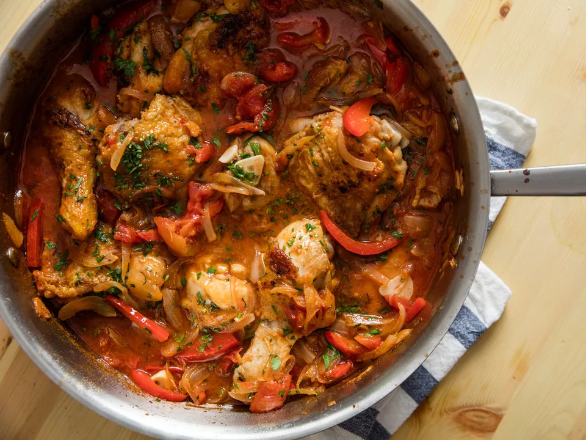

Chicken Cacciatore

Chicken cacciatore with tomato and bell pepper
Chicken cacciatore may be an Italian classic, but that doesn't mean there's a set way to make it right. Here, we braise chicken legs in white wine with red bell pepper, onion, and tomato; if that's not your cup of tea, we have a chicken cacciatore with mushrooms recipe, too. In both cases, the quick-cooking dish is done just about an hour—even though it'll taste like it's been cooking all day.
Ingredients
- 3 to 4 pounds (1.4 to 1.8kg) bone-in, skin-on chicken legs, thighs and drumsticks split
- Kosher saolt and freshly ground black pepper
- 3 tablespoons (45ml) extra-virgin olive oil
- 1 medium (8-ounce; 225g) yellow onion, thinly sliced
- 5 medium cloves garlic, thinly sliced
- 3/4 cup (175ml) dry white wine
- 1 (28-ounce; 795g) can peeled whole tomatoes, drained and crushed by hand, plus 1/2 cup (120ml) reserved juices from can
- 2 sprigs fresh rosemary, sage, or thyme
- 1 bay leaf
- Minced flat-leaf parlsey, for garnish (optional)
Directions
- Preheat oven to 350 degrees fahrenheit (175 degrees celcius). Season chicken all over with salt and pepper.
-
In a Dutch oven or large straight-sided saute pan, heat oil over medium-high heat until shimmering. Working in batches, add chicken and cook, turning occasionally until browned all over, about 6 minutes per side. Transfer chicken to a platter as it finishes cooking and set aside.
- Add onion, pepper, and garlic and cook, stirring and scraping up any browned bits, until softened, about 8 minutes.
- Add wine and bring to a simmer. Add tomatoes and reserved juices, along with herb and sprigs and bay leaf. Return to a simmer. Season with salt and pepper. Nestle chicken and any accumulated juices into liquid and vegetables.
- Transfer to oven and cook, uncovered, until chicken is fully cooked through tender and sauce is slightly reduced and thickened, about 30 minutes. Discard herb sprigs and bay leaf. Serve right away, garnishing with minced parsley if desired.